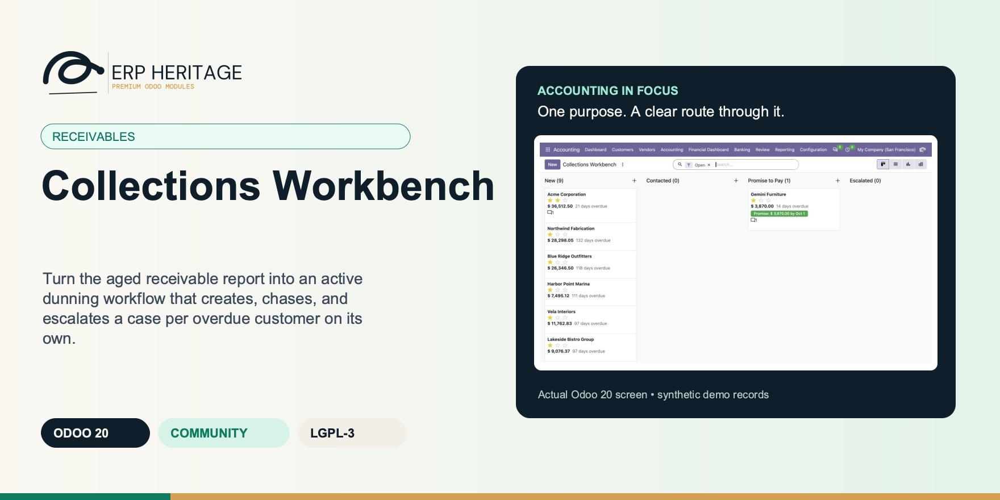
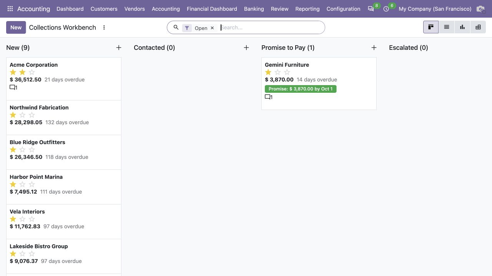
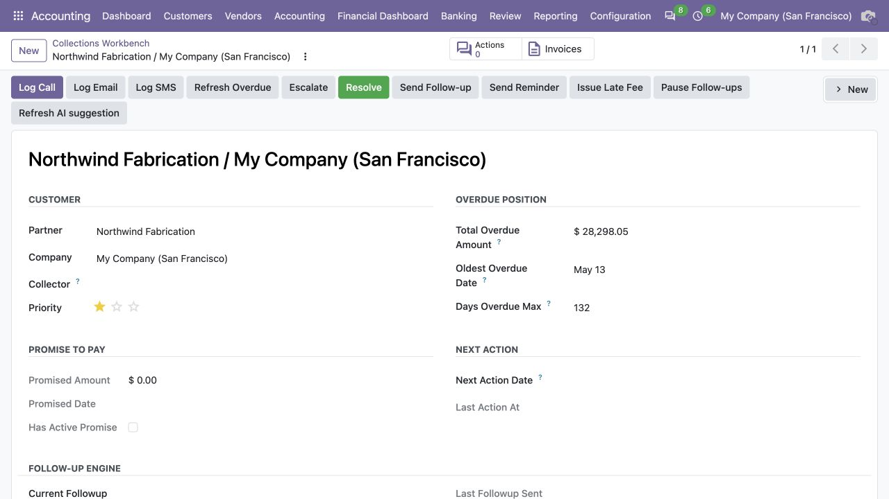
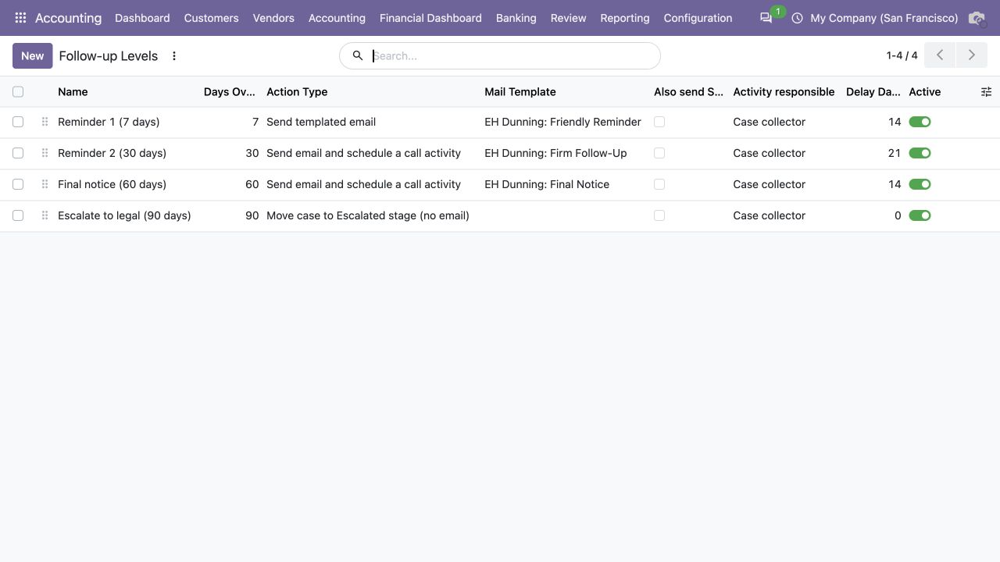

ERP HERITAGE / ODOO 20 COMMUNITY
Turn the aged receivable report into an active dunning workflow that creates, chases, and escalates a case per overdue customer on its own.
LGPL-3 · Odoo 20 · v20.0.1.2.8 · Module guide, setup, workflows and rollout checks
The purpose
Collections Workbench turns the aged receivable report from a passive dashboard into an active workflow. A single GROUP BY SQL pass over open receivable lines applies each company grace period and creates one collections case per overdue commercial customer per company, idempotently, so the nightly cron updates totals rather than duplicating cases. A canonical partial EXCLUDE constraint enforces only one open case across every contact of the commercial customer, with each row isolated by a savepoint when concurrent workers race. Each case surfaces the total overdue, oldest due date, and days overdue across a seven column kanban: New, Contacted, Promise to Pay, Escalated, Disputed, Resolved, Written Off. A configurable per company follow up ladder fires on the shipped defaults of 7, 30, 60, and 90 days overdue, selecting the highest currently applicable unsent step. Each level sends a branded HTML dunning email or schedules its configured activity, advanced by a savepoint isolated daily cron so one delivery failure does not halt the queue. Promises to pay are captured as an amount plus a date on one immutable action row, and when that promise lapses a bounded broken promise cron escalates it once by recording the exact promise action identity. Every collections action is written to an append only action log that is blocked from create, edit, and delete in the user interface and from write and unlink at the model level. A late fee wizard charges a flat or prorated percent per month fee computed in Decimal to the cent, revalidates the live ledger at issuance, posts a standard customer invoice, and records invoice linked evidence under a database unique issuance fingerprint so the same exposure, policy, and issue date cannot be charged twice. A per case Statement of Account PDF listing open invoices and action history renders through the shared suite brand header and footer for print, download, or attachment.
Inside Odoo 20
Captured from Odoo 20 Community using synthetic demonstration records. Configuration screens show the available workflow; external service connectivity still requires the relevant provider setup and validation.

Collections workbench groups overdue customer cases by status, including a recorded promise to pay.
Captured 2026-09-22 from isolated Odoo 20 Community database with synthetic demonstration records. No external submission or live banking activity is represented.

Customer collection case shows overdue balance, aging, promised payment and follow-up controls.
Captured 2026-09-22 from isolated Odoo 20 Community database with synthetic demonstration records. No external submission or live banking activity is represented.

Configure staged reminders, collector activities and escalation by days overdue.
Captured 2026-09-22 from isolated Odoo 20 Community database with synthetic demonstration records. No external submission or live banking activity is represented.
Inside this module
One GROUP BY SQL pass builds a case per overdue customer from open AR and refreshes it nightly. The follow up cron picks the next due level per case and sends it, so the queue moves whether or not a collector logs in.
Every call, email, follow up, and broken promise escalation writes a row to an action log that blocks write and unlink at the model level. Auto creation is idempotent and de duplicated by a partial EXCLUDE constraint, so re running the cron never doubles a case.
LGPL-3 source on disk. No activation key, no phone home, no recurring licence. Configure the ladder per company, swap in your own templates, and extend the workflow. Free today, free at renewal, because there is no renewal.
The nightly aging refresh zeroes the total on cases whose partner paid down their balance, so a customer who drops out of the overdue aggregation never lingers with a stale figure until someone clicks Refresh.
A resolved case is never reopened. A new overdue invoice spins up a fresh case so the resolution history stays intact. The EXCLUDE constraint only forbids two open cases for the same commercial customer, not a closed one plus a new one.
Broken promise escalation is idempotent. The cron records the exact immutable promise action it handled, so time passing can never re escalate the same commitment while a newer promise remains independently eligible.
Follow up counters increment with an atomic SQL UPDATE then a cache invalidation, so a manual send and the scheduled cron hitting the same case at once cannot clobber each other with a read modify write race.
The late fee wizard computes flat or prorated percent per month fees in Decimal with ROUND_HALF_UP, revalidates the live ledger at issuance, and records the invoice under a database unique issuance fingerprint so the same exposure, policy, and issue date cannot be charged twice.
From input to outcome
Review newly created and existing cases, checking the customer balance and previous contact before taking action. Gather overdue receivables, collection cases, follow-up levels, contact history and promise-to-pay dates. Use a representative case with a known expected result so the team can separate configuration decisions from unexpected behaviour. Keep the supporting commercial or accounting evidence available during review.
Move cases through the appropriate follow-up stage, record activities and promises, and use the letter workflow when authorised. Follow the record’s available actions in the order intended by the workflow. Review the selected company, relevant dates and any validation messages before continuing. If the source data changes, reassess the result against the updated evidence.
Overnight the aging refresh cron rebuilt every case from open AR after applying each company grace period, and a customer who paid down their balance dropped to a zero total instead of showing a stale figure. The follow up cron sent the highest applicable firm reminder to three accounts and scheduled a call activity on each. One customer who promised to pay last week missed the date, so the broken promise cron already bumped its priority, moved it to Escalated, and recorded that exact promise action as handled, preventing any later run from escalating the same commitment again. The controller opens one account that disputes its invoice, drags it to Disputed, and prints a Statement of Account PDF listing every open invoice and the full contact history on the shared suite letterhead. For a chronic late payer, the late fee wizard previews a prorated percent per month charge to the cent and posts it as a normal customer invoice in one click with immutable invoice linked evidence.
Check overdue promises and escalation evidence alongside the current invoice position so paid debt is not chased from a stale view. Compare the outcome with the expected treatment for this case and record the reason for any difference that requires follow-up. Give exceptions an owner so they do not disappear inside a period-end spreadsheet.
Maintain follow-up policy and contact ownership; legal escalation and commercial disputes remain business decisions for the organisation. Include the accepted operating example, configuration choices and unresolved dependencies in the handover. Review them when business policy, source data or the surrounding Odoo applications change.
Business situations
Collections Workbench is relevant to credit controllers and customer-account teams who need to answer this question: Which overdue customers need action, what was promised, and what happens next? Start with the process that creates the decision, identify its owner and agree what evidence the reviewer needs. A narrow pilot helps the team evaluate the supported workflow using its own accounting data before broadening access.
Use the module’s receivables role as one part of a controlled close. Bring the relevant overdue receivables, collection cases, follow-up levels, contact history and promise-to-pay dates to the review, then explain the result alongside the business event it represents. Establish which outputs become part of the reporting pack and which outstanding matters need a separate accounting decision.
Turn the business question into an acceptance case: Which overdue customers need action, what was promised, and what happens next? Use one ordinary example and one relevant exception from the supported scope below. Ask the intended operator to prepare it and the reviewer to explain the result. Retain that accepted example with the deployment notes so future changes can be assessed against an understood process.
Before the first result
Confirm that the organisation needs the supported receivables process described here. Identify the responsible credit controllers and customer-account teams and write down the decision they expect the module to support. Use the limitations section to separate shipped behaviour from an integration, professional judgement or operational service that needs another owner.
Prepare overdue receivables, collection cases, follow-up levels, contact history and promise-to-pay dates. Check the relevant records in the intended company and use dates that match the business event. Resolve missing accounting configuration before evaluating calculated output; plausible-looking totals do not establish that the chosen inputs or policies are correct.
This module declares Accounting Suite Base as part of its installation foundation. Its direct standard-Odoo dependencies are mail, sms. Review the actual dependency set in the target database before a rollout, especially where another addon also extends the same accounting models, menus or posting actions.
Define who operates Collections Workbench, who reviews unusual results and who maintains configuration. Run the representative workflow below in a test database using the intended users. Confirm that users can reach the work they own and that the reviewer understands the available evidence before moving the process into live operation.
Workflow reference
A single grace aware GROUP BY aggregation per company and commercial customer bounds the work by distinct customer pairs instead of loading every overdue ledger line into Python, so large receivables ledgers stay fast.
A single grace aware GROUP BY SQL pass over open receivable lines creates one case per overdue commercial customer per company. The nightly cron updates totals rather than duplicating, and a canonical partial EXCLUDE constraint enforces one open case across all contacts of that customer.
A per company days overdue ladder firing on shipped defaults of 7, 30, 60, and 90 days. Each run selects the highest currently applicable unsent level, sends its branded HTML dunning email or schedules its configured activity, and isolates each case in a savepoint so one failure does not stop the queue.
Promises are captured as an amount plus a date on one immutable action row. When a promised date lapses, a bounded cron escalates it once and records that exact action identity, while a later promise remains independently eligible.
Every call, email, SMS, meeting, note, follow up, late fee, and escalation writes a row that is read only in the interface and blocked from write and unlink at the model level, so the contact and invoice evidence cannot be edited or deleted.
Flat or prorated percent per month fees are computed in Decimal to the cent, revalidated against the live ledger at issuance, and posted as a standard customer invoice with immutable invoice linked evidence and a unique exposure fingerprint.
A per case PDF listing open invoices plus action history, rendered through the shared suite brand header and footer, registered as a report so it prints, downloads, or attaches to the case.
Three branded HTML templates ship wired into the default ladder as courteous reminder, firm reminder, and final notice. Plain fallback templates retain their stable upgrade IDs for optional manual selection.
When this action results in a promise to pay, record the amount here. The case's promise tracking pulls from the most recent action that has a non zero Promise amount.
True when the latest promise to pay has lapsed (promise date is in the past) and the case has not been resolved. The broken-promise cron escalates these cases.
Exact promise action most recently escalated. A promise can be handled once; a newly logged promise has a new action identity.
The most recent follow-up level applied to this case. The next cron pass picks the highest applicable level above this one whose Days overdue threshold is met.
Date on which the next follow-up becomes due, derived from Last followup sent at plus the current level's Delay days. Indexed via the cron's domain filter.
Pause auto follow-ups on this case (for example while negotiating a payment plan). The cron skips paused cases; manual sends are still permitted.
Trigger this level when the case's Days overdue max is at least this many days. Levels fire in ascending order; a case at 45 days overdue with levels at 7 / 30 / 60 sits on the 30 level until it crosses 60.
Mail template used when Action type involves email. Templates must be bound to Collections case so {{ object.* }} expressions resolve to the case.
When set, an SMS rendered from the SMS template is sent to the partner's mobile alongside whatever the action type does, giving multi-channel dunning.
SMS template used when 'Also send SMS' is on. Bound to Collections case so {{ object.* }} resolves to the case.
Mark the last level in the chain. Cases on a terminal level are not auto-advanced; the cron stops sending follow-ups for them and a collector must intervene.
When Action type is 'escalate', the case moves to this stage. A target is mandatory so escalation can never silently route a case into a disputed workflow.
Number of non-resolved collections cases on this partner. Refreshed on form load; the auto-creator cron and the manual refresh action update the underlying case totals.
Used by the auto creator to place new cases. Only one stage should carry this flag at any given time.
Stage to which the broken-promise cron escalates cases. When no stage carries this flag, the cron leaves the stage unchanged and only bumps priority.
Used when Fee mode = 'percent'. Applied to the overdue receivable items, each prorated by its own overdue days / 30.
Output taxes charged on the late-fee line. When left empty on apply, the company's default sale tax is used so a GST-registered issuer charges output tax.
Illustrative implementation exercise. A customer has several overdue invoices and promises to pay on a specified date. Open the case and review the current debt and prior contact before sending another message. Record the promise and its amount so the next collector can see what was agreed. An open case is a work record, not proof that every invoice in it remains unpaid. After the promise date, compare the actual customer position with the recorded commitment. Review an escalation when payment did not arrive and a resolved case when it did. Check that follow-up letters and activities become part of the history, giving the supervisor enough context to distinguish a missed promise from a disputed invoice.
Questions before rollout
It is designed for credit controllers and customer-account teams. Its central business question is: Which overdue customers need action, what was promised, and what happens next? The listing describes the shipped operating scope and the decisions that remain with the organisation. Evaluate it against your own records and review process, rather than treating the module name as a promise to cover every scenario in that accounting area.
Have overdue receivables, collection cases, follow-up levels, contact history and promise-to-pay dates ready, together with the person who owns the related accounting policy. Review newly created and existing cases, checking the customer balance and previous contact before taking action. A known example makes it possible to check the result and resolve configuration questions before the process is repeated across more records or companies.
Check overdue promises and escalation evidence alongside the current invoice position so paid debt is not chased from a stale view. Keep the relevant source evidence with the output and be explicit about company, date and policy choices. The most useful review asks whether the result follows from the business inputs, not only whether the operation completed without a validation message.
It belongs to the receivables family. Its declared custom dependency foundation is Accounting Suite Base. Installing the complete suite also brings other operating and specialist modules; using this focused module should be evaluated against its own dependency list and scope. Optional services still need their own configuration and agreement where applicable.
Pausing a case is a single tracked toggle. The follow up cron skips paused cases and manual sends are still permitted, but there is no pause reason field and no automatic resume date. Resuming is a manual action. Maintain follow-up policy and contact ownership; legal escalation and commercial disputes remain business decisions for the organisation.
No. Collections Workbench provides the specific records, calculations or workflow described in this listing. The organisation remains responsible for its source information, accounting choices, supporting evidence and review. Where the process uses an estimate, a contract assessment or an external service, appoint the appropriate owner before relying on the output.
Scope and requirements
Pausing a case is a single tracked toggle. The follow up cron skips paused cases and manual sends are still permitted, but there is no pause reason field and no automatic resume date. Resuming is a manual action.
A recorded promise to pay does not pause or roll back the follow up timer. Promises are surfaced and a lapsed promise is escalated overnight, but the next follow up date is driven by the level and last send date, not by the promise.
Follow up levels are days overdue thresholds, not the kanban stages. Activities and emails are driven by levels, not by dragging a card between columns.
The dunning ladder is configurable and override able, but there is no built in LLM next action suggestion in this module. That feature exists only if the separate AI Agent Layer module is installed.
The follow up engine sends branded HTML emails, not rendered PDF letters. The only PDF is the per case Statement of Account, which is not tied to the ladder levels.
Standards references describe the accounting subject addressed by the module. They do not establish certification, statutory filing acceptance or suitability for every jurisdiction. Your finance team owns its assumptions, accounting policies and review.
Installation scope
Odoo installs the following direct dependencies automatically. Additional dependencies can be brought in by those modules. Related modules in the wider catalogue are optional unless they appear in this dependency chain.
Shared reporting engine for the ERP Heritage Odoo 20 Community accounting suite, providing a reproducible report-execution audit log and a move-version result cache. Append-only audit log of every report render with user, timestamp, the full options snapshot, runtime, and a SHA-256 result hash for XLSX and PDF output, plus a multi-company analytic-aware parameterised SQL builder with no raw user input in SQL, a three-tier User/Manager/read-only Auditor privilege model, and a currency-aware XLSX writer. Odoo 20 Community accounting reporting engine, reproducible financial report audit trail, move-version report cache invalidation, multi-company parameterised SQL builder, append-only audit log, read-only auditor role, SHA-256 report hash compliance, currency-aware XLSX export, analytic-aware journal item aggregation.
Included dependency: eh_account_base. The shared reporting engine under the ERP Heritage accounting modules: an append-only render audit log, precise per-company cache invalidation, and a whitelist-only parameterised SQL builder.
Odoo Community dependency required by this module. Its own dependencies and configuration remain part of the installation scope.
Odoo Community dependency required by this module. Its own dependencies and configuration remain part of the installation scope.
Acceptance guide
The following are recommended rollout checks, not claims of additional built-in features. Apply the checks relevant to this module and retain evidence of your own results.
Select a recent, closed period that your finance team understands well. Keep its approved source documents, ledger totals and existing working papers available. Reproduce that period in a staging database before working on current transactions. A familiar period makes differences visible: you can distinguish an opening balance problem from a configuration choice, a timing difference or a genuine defect. Agree which person owns each discrepancy and what evidence will close it. Successful installation is the starting point; a repeatable business outcome is the acceptance criterion.
Write down the output your team needs from this module: a reviewed transaction, an exported file, a reconciled balance, an approved schedule or an operational queue. Identify who prepares it, who reviews it and who relies on it next. Make the scope concrete with one company, one reporting period and a small representative document set. Include an ordinary case and an exception. This keeps the evaluation focused on the business decision instead of the number of available screens, and gives reviewers a consistent way to compare the new workflow with their current process.
Use the Odoo 20 edition of the module and its dependencies together. The manifest defines what Odoo installs automatically; a feature mentioned elsewhere in the wider product family is not automatically included. Review the dependency guide on this page before enabling the complete suite, especially where your deployment also uses Sales, Purchase, Inventory or website components. Confirm that your hosting arrangement accepts custom server modules and their Python requirements. Keep a copy of the installed module versions with your acceptance record so a later update can be checked against the same baseline.
Check the companies, currencies, fiscal periods, journals, accounts and partner records used by your sample. Confirm that account purposes agree with your chart of accounts and that archived records are not being selected inadvertently. Review company-specific settings while the intended company is active. Where a workflow needs bank details, analytic dimensions, product information or payment terms, validate those inputs with their owner. Clean master data reduces repeated exceptions and makes it easier to investigate the exceptions that remain. Keep the preparation list short enough for someone else to repeat it.
Decide which source establishes the opening position before introducing new transactions. Save the source date, company, currency and supporting reconciliation. If a module maintains a schedule or a working-paper balance alongside the ledger, document how that opening amount should tie to the general ledger. Do not use balancing entries to hide a difference during the pilot. Classify the difference, correct its source and rerun the comparison. The resulting trail is useful both for your internal reviewer and for support if an unexpected calculation needs investigation.
Choose named users for preparation, review and administration. Confirm their practical access by signing in as those users in staging, rather than relying on an administrator's view of the menus. A visible menu does not replace model access or record restrictions, and a hidden menu does not by itself prove that data is protected. For your own acceptance check, verify the specific business operations each role needs. If your organization requires separation of duties, include that policy in the rollout criteria and check the actual workflow against it before granting production access.
Run the sample with the intended company selected, then repeat the relevant navigation and search checks as a user assigned to a different company. Record which company owns each source document and each generated result. For users who work across entities, confirm how their allowed-company selection affects totals and available records. Investigate any cross-company difference before it becomes a month-end problem. Group-level work and company-level work have different scopes; use the appropriate module and document the scope on the review evidence instead of assuming one screen represents both.
Include a company-currency case and, where relevant to the module, a foreign-currency case. Check the date used to select exchange rates and keep the rate source available to the reviewer. Add a transaction near a period boundary so the team can see whether document date, accounting date or another business date drives the result. Test decimal precision with a small amount as well as a large one. Record the expected rounding treatment. These checks turn vague differences in totals into questions that can be resolved against your accounting policy.
Choose one result and follow the available links or record references back to the original business document. Compare its company, partner, amount, currency and dates with the expected source. Where the workflow creates a journal entry, inspect the accounts and balancing lines before relying on an aggregate report. Where it exports a file, compare the file's records with the selected batch. Save a small, intelligible evidence set instead of an indiscriminate screenshot archive. A reviewer should be able to explain what happened without needing the original preparer beside them.
If this module creates or updates accounting entries, separate preparation from the decision to post in your operating procedure. Inspect the proposed outcome, resolve missing configuration and confirm the intended period before using a posting action. If the module does not post entries, identify the equivalent commitment point, such as sending a file or approving a review record. Record who is allowed to make that decision. The page describes the module's supported workflow; your team still needs an operating policy that fits its accounting responsibilities and approval structure.
From pilot to production
Use a deliberately incomplete sample in staging: a missing required setting, an unsuitable date or a source document that is not ready for the next step. Observe the actual message and the record state that remains. Correct the input and repeat the operation. Check that the recovered result agrees with the ordinary successful case. For transactions already committed, use the supported correction or reversal workflow rather than editing database records. Your acceptance record should explain how staff recover from mistakes, because that is part of day-to-day usability, not an unusual administrative task.
Repeat an import, calculation, preparation step or button action only where the documented workflow permits it. Confirm whether the expected behavior is a recalculation, a refusal, a new version or reuse of an existing record. Do not infer universal duplicate prevention from one successful test. Record the behavior of the actual operation your team will use and include it in staff guidance. A small, identifiable sample makes duplicate records easy to spot and avoids creating a misleading acceptance result from a large batch with poorly understood contents.
Where accounting dates are involved, inspect your company's lock settings and the role that can change them. Include one sample dated inside a closed period and one in the open period, then observe the supported behavior with normal finance access. Agree how the team will handle late documents and approved corrections. The goal is a clear route for legitimate work that preserves the reason the period was closed. Record the policy alongside the module's workflow so operators know when to stop and involve the person responsible for the close.
If the module produces reports or exchange files, have the intended recipient inspect a sample. For a finance report, check the filters, company, dates, currency, labels and totals. For a bank or service file, use that recipient's own validation or test process before a production submission. Generating a structurally valid file does not establish acceptance by every provider. Keep the exact sample and any recipient feedback with the rollout record. Where no export is provided, agree which supported screen or linked record serves as the handover evidence.
Identify any step that depends on a separately configured provider, connector, credential or commercial service. Confirm the exact adapter and its requirements before scheduling a live demonstration. Some family modules provide deterministic rules or file preparation without a live external connection; their usefulness should be evaluated on that basis. Test a provider failure in staging only when the adapter offers a safe test route. Make it clear who manages credentials and provider subscriptions, and who should be contacted when an external service is unavailable.
Time the operations your staff will actually repeat, using a dataset that resembles your expected company, date range and document volume. Record the environment and sample size beside the timings. Include navigation, filtering, preparation and review rather than quoting a single best-case page load. This page makes no universal performance promise: network latency, database size, customizations and infrastructure affect results. Use measurements to choose a practical rollout batch size and to identify any operation that needs investigation before more users join the workflow.
Give staff a short exercise that begins with a business situation and ends with a reviewed result. Include the expected amount or state, the navigation route, the point at which a reviewer becomes involved and the supported correction route. Let operators explain why their result is correct. Add only the settings and exceptions relevant to their role. A concise internal playbook built from your own pilot is easier to maintain than a large collection of unannotated screenshots, and it helps new users understand the relationship between this module and the rest of Accounting.
Capture the module version, Odoo version, affected company, operation, exact message and a minimal sequence of steps. Use redacted sample documents when sharing evidence outside your organization. State the expected result and the actual result separately. Include the date filters and role used, because the same record can look different with another scope or set of permissions. Never include passwords, API tokens or private keys in a support message. Good reproduction details allow the problem to be investigated without guessing at your business setup or asking staff to repeat a full close.
Before deploying an update, back up the database and filestore together, and restore that backup into an isolated environment. Apply the module update there, then repeat the key pilot scenarios using the saved acceptance record. Check that existing documents remain readable and that the expected actions and menus still lead to the right workflow. Include one newly created record as well as an older one. Keep a rollback plan appropriate to your deployment and confirm that the backup can be restored before scheduling the production change.
Agree the release criteria before the pilot ends: expected financial results, access boundaries, supported corrections, output acceptance and owner sign-off. List unresolved items with their business impact instead of treating every observation as a blocker or dismissing it as cosmetic. Start production with a manageable scope and a named reviewer. Keep the first cycle's evidence so that later enhancements can be assessed against a concrete baseline. App-store descriptions help you select and understand the module; acceptance in your own configuration establishes whether the workflow is ready for your team.
Connected capabilities
These related modules explain how this workflow connects to the wider accounting process. Only the dependencies declared above are installed automatically. Choose optional additions for a specific business need.
The shared engine that powers the ERP Heritage accounting modules for Odoo 20 Community. It auto-installs as a dependency of any ERP Heritage accounting module, so you do not need to install it by hand.
Use the same company-dependent customer credit amount throughout native Odoo and EH credit controls. This module adds a warn-or-block invoice-posting policy to that shared amount, combines customer exposure across the authorised accounting-branch scope, and records manager exceptions. The company default is shared by all enforcement policies. Upgrades preserve former EH terms and require a deliberate manager decision where native and EH amounts conflict.
Customer Portal Extra turns the standard Odoo 20 Community customer portal into a self-service accounts receivable corner. It adds two things and does them carefully.
Real recurring customer invoices for Odoo 20 Community Edition. Templates, not workarounds. Configure a billing arrangement once, and a daily cron generates invoices on the cadence you set, in draft for review or auto posted for hands-off operation.
ERP Heritage Community Accounting Pro installs a fixed collection of 50 direct accounting dependencies. Together with the suite itself and the transitive EH EDI Core foundation, its custom-module closure contains 52 modules. The collection brings reporting, reconciliation, payments, receivables, approvals, specialist accounting, group work and close controls into one Community installation. Its value comes from connecting those processes and their evidence; adoption still requires deliberate company configuration, accounting ownership and review. Australian BAS is available separately and installs the suite as its accounting foundation.
Plan the surrounding workflow
The following playbooks explain adjacent work in named companion modules. They are included here to help you plan the handoff around this module. Each companion is labelled as an installed dependency or an optional addition. These capabilities belong to that named companion, not to the standalone module you are reading about.
Optional companion; requires separate installation
One shared customer credit limit, controlled invoice posting, reviewed upgrade conflicts and time-limited manager exceptions.
The native customer limit is the single stored authority. Editing the EH credit field updates that same amount; editing native credit settings is immediately reflected in the EH posting gate. Each company retains its own customer terms.
Company Credit Limit on every policy displays the same native company default. A customer-specific amount takes precedence. Policies choose enforcement and exposure rules without introducing a second competing default amount.
Block mode checks exposure and the proposed customer invoice against the effective limit using company-currency rounding. It locks the commercial customer before the final exposure decision. Warn mode records the breach and continues posting.
An authorised reviewer records a reason for the particular invoice. Changing the reviewed credit amount, policy inputs or invoice requires a fresh reason. The reviewer must still belong to the configured override group at posting.
Override Validity defaults to 24 hours. An expired reason must be reviewed and saved again before posting. A policy can set zero hours to disable time expiry where that matches the organisation’s review policy.
Previous customer and policy amounts are retained as read-only evidence. Different explicitly configured native and EH terms create a pending review instead of silently overwriting either business decision. A pending review pauses affected posting.
Managers choose Keep Native Limit or Use Previous EH Limit. The review retains both historical values, the resolved amount, reviewer and resolution time. Customer access and company scope still apply to the decision.
Exposure combines unpaid receivables and, when enabled, draft customer invoices and the uninvoiced portion of confirmed sales orders. Child contacts share their commercial customer’s control within the authorised branch scope.
Posted exceptions retain the acting user, time, exposure, limit, invoice amount, excess and reason. Override records cannot be deleted or quietly rewritten; a resolution comment remains available for later review.
EH Accounting Managers maintain customer credit amounts and enforcement policies. The native fields and the EH alias share these protections, while existing contact access and company permissions remain effective.
Review this companion’s own setup and scope before connecting the workflows. Keep the company, reporting date and business document references consistent at the handoff.
Optional companion; requires separate installation
Route each case through an evidence-aware dunning ladder, make action and priority keys operationally searchable, and store provider prose only after a manager-confirmed refresh.
Action and priority are stored dependency-driven selections, so managers can filter, sort, and group their work queue. Human rationale stays a live translated field.
Manager-confirmed provider output stores actor, time, provider, and exact SHA-256 source fingerprint. Changed case facts mark it stale; direct RPC writes are refused.
Refresh is singleton and manager-only. A row lock plus exact source/provider fingerprint makes unchanged retries idempotent before any network call.
Active promises, payment plans, disputes, holds, and resolved stages remain authoritative workflow controls. Provider prose cannot restart dunning on those cases.
Manual letters and configured automated final notices stamp immutable demand-letter evidence. An existing letter routes to review rather than sending another; external referral needs a proved 30-day wait.
Write-off review uses exact overdue balance against company-currency materiality. Lower balances stay reviewable at medium priority; material balances receive high priority.
Missing, manual, failed, malformed, or control-suppressed providers raise a user-facing error and preserve existing narrative evidence byte-for-byte.
Stored selection keys for action and priority support search, grouping, and sorting; rationale stays translated and deterministic with zero network I/O.
Review this companion’s own setup and scope before connecting the workflows. Keep the company, reporting date and business document references consistent at the handoff.
Optional companion; requires separate installation
Let customers pull their own statement PDF and see what they owe today, straight from the portal home.
Start date, end date and open-item or activity type are available directly on the portal card. No email request or back-office task is needed.
The private render uses the same customer-statement handler and records options plus the exact PDF hash without storing a reusable source payload.
The authenticated route derives the commercial partner and active company from the session. Query-string partner or company values never select report data.
Ask for a statement as at a past date and it reverses the partial reconciliations created after that date, so historical open balances match what was actually outstanding then, not today's residual. Most portal add-ons just print today's numbers under yesterday's heading.
Invalid dates, excessive ranges, a busy render lock, a missing statement engine, and render failures each produce a clear branded page with an appropriate status instead of a stack trace.
Every successful render records its execution, normalized options, and exact PDF hash. The source PDF payload is deliberately not retained as a reusable attachment.
The card totals only positive overdue customer invoices in the active company and displays the active company's currency. Credits, refunds, unapplied payments, and sister-company entries never net the figure.
The authenticated response is marked no-store and carries safe ASCII and UTF-8 filenames. Partner and company scope always come from the signed-in session.
Review this companion’s own setup and scope before connecting the workflows. Keep the company, reporting date and business document references consistent at the handoff.
Optional companion; requires separate installation
Measure point-in-time trade-receivable loss allowances with a validated provision matrix or general 3-stage model, then post only the movement with controlled revision, reversal and write-off workflows.
The run recognises the movement from the opening allowance to the closing allowance in one balanced entry, debiting impairment loss and crediting the loss-allowance contra account on an increase and reversing on a decrease (IFRS 9.5.5.8), never re-posting the full allowance.
The simplified provision matrix measures lifetime ECL as gross carrying amount at each bucket's loss rate. The general approach measures EAD times LGD times PD, using 12-month PD for Stage 1, lifetime PD for Stage 2, and an explicit keyed-lifetime or defaulted-100% policy for Stage 3.
The opening allowance defaults by roll-forward from the prior posted run's closing allowance, and a warning fires when it disagrees with the loss-allowance ledger balance carried into the period, so the roll-forward is confirmed before you post.
Posting books only the closing-less-opening movement. A falling allowance debits the contra account and credits impairment loss; a nil movement records an immutable zero-movement snapshot without inventing an empty journal entry.
Populate reconstructs every posted receivable's residual as at the reporting date, including later-settled items, validates complete non-overlapping ageing coverage, excludes the allowance account and bulk-writes the measured totals under a run-only lock.
The opening allowance is defaulted from the prior posted run, and the ledger tie-out negates the contra account's credit balance and excludes this run's own move, so it compares like for like and flags a real mismatch.
Once posted or reversed, the reporting date, accounts, journal, opening allowance and every bucket are frozen against direct ORM writes, and buckets cannot be added, edited, moved in or deleted, so the recognised figure can never silently drift from the entry that was booked.
A partial unique index permits one live run per company and reporting date while retaining cancelled and reversed history, so corrections remain auditable and the active roll-forward stays single-valued.
Review this companion’s own setup and scope before connecting the workflows. Keep the company, reporting date and business document references consistent at the handoff.
ERP Heritage
Start with the workflow, setup and acceptance guide above. For implementation or support, share your Odoo version, module version, business scenario and a redacted example. Keep credentials and personal data out of support messages.
Published by ERP Heritage. Odoo is a trademark of Odoo S.A.; this independently developed application is not an Odoo S.A. product or endorsement.
Package: eh_account_collections · Release: v20.0.1.2.8 · License: LGPL-3.